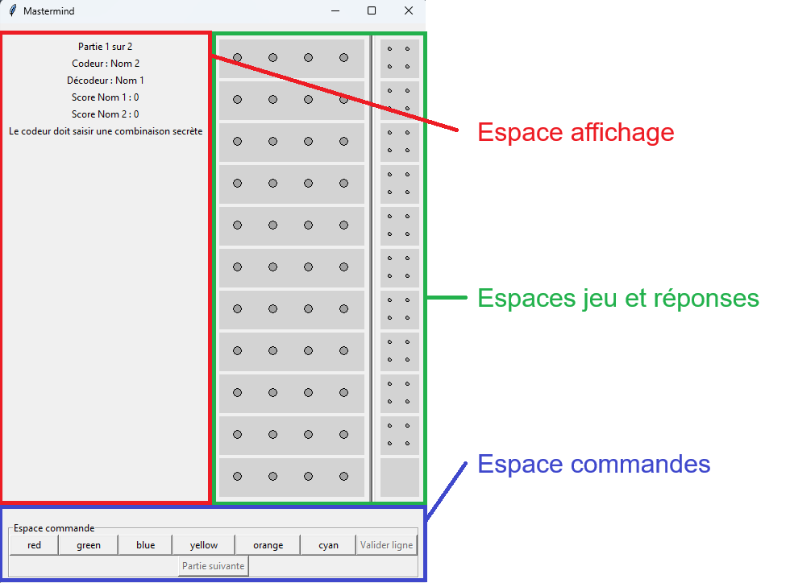
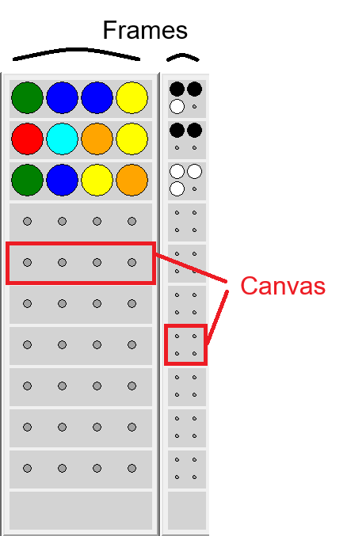
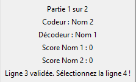
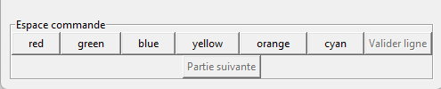

- Le programme implémente un Mastermind à 2 joueurs (codeur et décodeur) avec plusieurs parties.
- Le codeur choisit une combinaison secrète. Le décodeur essaie de la deviner en proposant des combinaisons.
- Le système indique à chaque proposition combien de pions sont bien placés et combien sont présents mais mal placés.
Objectif principal
Structure de données utilisées
- matjeu : matrice 2D où chaque ligne représente un essai, et la dernière ligne la combinaison secrète.
- matreponse : matrice 2D stockant les résultats (pions noirs et blancs) pour chaque essai.
- Des variables globales pour suivre le nombre de colonnes (pions), lignes (essais), joueurs, scores, rôle codeur/décodeur, etc.
Exemple des matrices en cours de partie
matjeu (11 × 4)
0 5 2 1 1 0 5 2 2 1 0 5 3 4 0 5 2 1 3 4 2 0 1 -1 -1 -1 -1 -1 -1 -1 -1 -1 -1 -1 -1 -1 -1 -1 -1 -1 -1 -1 -1 -1 2 3 1 5
matreponse (10 × 4)
1 1 1 -1 1 1 1 -1 0 0 1 -1 0 1 -1 -1 0 1 1 -1 -1 -1 -1 -1 -1 -1 -1 -1 -1 -1 -1 -1 -1 -1 -1 -1 -1 -1 -1 -1 -1 -1 -1 -1

Aspects techniques et conception
- L'interface graphique Tkinter est indépendante de la logique fonctionnelle.
- Tkinter ne permet pas de passer des arguments directement aux fonctions de rappel des boutons.
- L’usage des variables globales est donc fréquent pour contourner le problème et éviter l'usage multiple de fonctions lambda.
Fonctions importantes
feedback(matJ, matR)
Afficher le code de la fonction feedback()
def feedback(matJ, matR):
"""
Fonction permettant de compter les pions bien placé, de compter les pions dont la couleur est bonne mais mal placés, puis d'afficher les pions (respectivement noirs et blancs)
Parameters
----------
matJ : int[nblignes+1][nbcolonnes]
matR : int[nblignes][nbcolonnes]
----------
Returns bool : permet de savoir si la manche est terminée (True) ou non (False)
"""
global nbcolonnes
global nblignes
global ligne
global pas
global rmarqueur
global dictcouleursreponse
global canvasreponses
tupSecret=matJ[nblignes] # tupSecret est la dernière ligne de la matrice de jeu
ListeReponse=matJ[ligne] # ListeReponse est la ligne en cours
black = sum(s==g for s,g in zip(tupSecret,ListeReponse)) # Nombre de pions bien placés
white = sum(min(tupSecret.count(c), ListeReponse.count(c)) for c in set(ListeReponse)) - black # Nombre de pions corrects mais mal placés
# On remplit la matrice réponse avec les blacks et les white
for i in range(black):
matR[ligne][i]=0
for j in range(white):
matR[ligne][black+j]=1
# On dessine les pions
for i in range(nbcolonnes):
if matR[ligne][i]!=-1:
xcercle=pas+rmarqueur+i%(nbcolonnes//2++nbcolonnes%2)*(pas+2*rmarqueur)
ycercle=pas+rmarqueur+i//(nbcolonnes//2+nbcolonnes%2)*(pas+2*rmarqueur)
cercle(canvasreponses[ligne],xcercle,ycercle,rmarqueur,dictcouleursreponse[matR[ligne][i]])
if black==nbcolonnes :
return True
return False
- Cœur du jeu : compare la proposition du joueur matjeu[ligne] avec la combinaison secrète matjeu[nblignes].
- Cette fonction :
- calcule le nombre de pions bien placés (noirs),
- calcule le nombre de pions présents mais mal placés (blancs),
- met à jour la matrice réponse matR pour stocker les résultats,
- Indique si la combinaison est correcte (victoire).
choisircouleur(matJ, numerocouleur, canvasL, bouton_validerligne)
- Permet au joueur de choisir une couleur,
- Met à jour la matrice et l'affichage,
- Gère le bouton valider.
bouton_valider()
- Gère la validation d'une proposition,
- Gère la logique de victoire/défaite et le score,
- Gère le changement de rôle avant la nouvelle partie.
initialiser_fenetre_principale(canvasL, canvasR)
- Réinitialise le plateau et prépare la nouvelle partie, inverse les rôles.
Décomposition de l'interface graphique
Nous avons décidé d'utiliser tkinter pour créer l'interface de jeu.
import tkinter as tkLe jeu apparaît dans une fenêtre qui s'appelle par défaut root, et qu'on affiche avec la commande root.mainloop()
import tkinter as tk
root = tk.Tk()
root.mainloop()Voici un aperçu de la fenêtre
L'espace jeu et l'espace réponse sont deux frames distinctes.
- espacecommande = tk.LabelFrame(root,text="Espace commande",relief='groove')
- espaceaffichage=tk.Frame(root, bd=4, relief="raised", padx=pas, pady=pas)
Chacun de ces espaces contient un nombre de canvas égal au nombre de tentatives que le décodeur a pour trouver le code secret,
plus une ligne pour que le codeur rentre son code, qui sera caché par la suite pour le décodeur.
- for i in range(nblignes+1):
- canvasL[i] = tk.Canvas(espacejeu, width=pas+(2*rpion+pas)*nbcolonnes, height=hligne,bg=dictcouleurs[-1])
Les espaces jeu et réponses sont d'abord remplis de petit cercles grisés modélisant les trous vides.
Lorsqu'un joueur place une bille, elle est modélisée par nouveau cercle de couleur, plus gros.
C'est pareil pour l'espace réponse, dont les objets dessinés sont juste plus petits.

L'espace affichage est une frame.
- espaceaffichage=tk.Frame(root, bd=4, relief="raised", padx=5, pady=5)
- espaceaffichage.pack(side="left",padx=0, pady=10, fill="y", expand=0.5)
Cet espace contient diverses informations sur la partie en cours : scores, identité du codeur et du décoeur, etc.
- numpartie=1
- nbparties=2
- sv_nbparties = tk.StringVar()
- sv_nbparties.set(f"Partie {numpartie} sur {nbparties}")
- labelnbparties = tk.Label(espaceaffichage, textvariable=sv_nbparties)
- labelnbparties.pack(side="top")

L'espace commande est une frame.
- espacecommande = tk.LabelFrame(root,text="Espace commande",relief='groove')
- espacecommande.pack(side="bottom",padx=10,pady=10,fill="x")>
Cet espace contient les boutons permettant aux joueurs de modifier l'espace jeu
- bouton_validerligne = tk.Button(espacecommande,text="Valider ligne", command=bouton_valider)
- bouton_validerligne.pack(side="left")
- bouton_validerligne.config(state="disabled")
